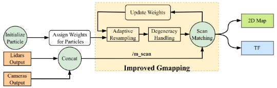
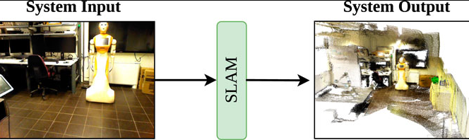

About Prof. Anis Koubaa
Professor Anis Koubaa is a distinguished researcher and academic leader in Computer Science and Robotics. With over two decades of experience in academia and research, he has made significant contributions to the fields of robotics, artificial intelligence, Internet of Things (IoT), and wireless sensor networks.
Prof. Koubaa currently serves as a Professor at Prince Sultan University in Saudi Arabia and is affiliated with several international research institutions. His research focuses on developing innovative solutions for autonomous systems, smart cities, and intelligent robotics applications.
Key Achievements
- Published over 200+ peer-reviewed research papers
- Editor-in-Chief of several prestigious journals
- Principal Investigator on numerous international research projects
- Keynote speaker at major international conferences
- Recipient of multiple research excellence awards
- Active collaborator with industry and academic institutions worldwide
Professional Experience
Professor of Computer Science
Prince Sultan University, Saudi Arabia
Leading research initiatives in robotics, IoT, and AI. Directing the Robotics and Internet-of-Things Laboratory.
Associate Professor
University of Technology, France
Conducted advanced research in wireless sensor networks and embedded systems. Supervised numerous PhD and Master's students.
Assistant Professor
National School of Computer Sciences, Tunisia
Established research programs in robotics and distributed systems. Published extensively in top-tier conferences and journals.
Research Engineer
Various Technology Companies
Gained industry experience in embedded systems design, real-time systems, and wireless communications.
Education
Ph.D. in Computer Science
National Institute of Applied Sciences, France
2005
Dissertation: "Real-Time Scheduling and Communication Protocols for Wireless Sensor Networks"
M.Sc. in Computer Science
University of Technology, France
2001
Specialization: Embedded Systems and Real-Time Computing
B.Sc. in Computer Engineering
National School of Engineering, Tunisia
1999
Graduated Summa Cum Laude with honors in Computer Systems Engineering
Featured Talks & Events
Future of Autonomous Robotics in Smart Cities
IEEE International Conference on Robotics and Automation (ICRA 2025)
Atlanta, USA
KeynoteAI-Driven IoT Solutions for Sustainable Development
World Economic Forum Technology Panel
Davos, Switzerland
Panel DiscussionIntegration of Machine Learning in Robotic Systems
International Conference on Intelligent Robots and Systems (IROS 2024)
Abu Dhabi, UAE
Invited TalkWireless Sensor Networks for Environmental Monitoring
IEEE Conference on Sensor Networks
Paris, France
Technical PresentationResearch Blog
The Future of Human-Robot Collaboration
Exploring the evolving landscape of human-robot interaction and its implications for the future workplace and society.
Read More...IoT in Smart Agriculture: A Comprehensive Review
An in-depth analysis of how Internet of Things technologies are revolutionizing modern agricultural practices.
Read More...Autonomous Navigation in Complex Environments
Discussing advanced algorithms and techniques for robot navigation in dynamic and unpredictable environments.
Read More...Machine Learning Applications in Robotics
A comprehensive look at how machine learning is transforming robotic systems and enabling new capabilities.
Read More...Wireless Sensor Networks: Past, Present, and Future
Tracing the evolution of wireless sensor network technologies and their impact on IoT applications.
Read More...Ethical Considerations in AI and Robotics
Examining the ethical implications of artificial intelligence and robotics in modern society.
Read More...Resources
Online Courses
Introduction to Robotics
Comprehensive course covering fundamental concepts in robotics, kinematics, and control systems.
Access CourseIoT Systems Design
Practical course on designing and implementing Internet of Things solutions for real-world applications.
Access CourseMachine Learning for Robotics
Advanced course exploring the integration of ML techniques in robotic systems and autonomous agents.
Access CourseResearch Projects
Smart City Robotics Initiative
Large-scale project developing autonomous systems for urban environments and smart city applications.
View ProjectAgricultural IoT Platform
Innovative platform combining IoT sensors, AI, and robotics for precision agriculture solutions.
View ProjectHuman-Robot Collaboration Framework
Research framework for safe and efficient collaboration between humans and robotic systems.
View ProjectOnline Channels
YouTube Channel
Educational videos covering robotics concepts, research insights, and technical tutorials.
Visit ChannelResearch Blog
Regular posts about latest research findings, industry trends, and technological innovations.
Read BlogLinkedIn Learning
Professional development content and industry insights shared on LinkedIn platform.
Follow on LinkedInAIBOMECH LAB
AIBOMECH Lab is where I regularly publish my academic research, hands-on robotics projects, and technical blogs. It’s a space dedicated to sharing my ongoing work in robotics, AI, and computer vision — including peer-reviewed papers, real-world experiments, and step-by-step tutorials. Whether you're a researcher, student, or enthusiast, you'll find valuable insights and practical applications here.
Publications
Multi-Head Attention-Based Framework with Residual Network for Human Action Recognition

This paper proposes a deep learning framework combining ResNet-18, Bi-LSTM, and multi-head attention for accurate and efficient human action recognition. It achieves 96.60% accuracy on the UCF-101 dataset and was validated on a mobile robot for real-time deployment.
Read Full PaperIf you wish to cite this paper:
@article{al2025multi,
title={Multi-Head Attention-Based Framework with Residual Network for Human Action Recognition},
author={Al-Tawil, Basheer and Jung, Magnus and Hempel, Thorsten and Al-Hamadi, Ayoub},
journal={Sensors},
year={2025},
publisher={Multidisciplinary Digital Publishing Institute}
}
Mobile Robot Navigation with Enhanced 2D Mapping and Multi-Sensor Fusion
This paper presents an enhanced SLAM framework for mobile robot navigation that integrates RGB-D cameras and 2D LiDAR sensors. A novel fusion strategy projects RGB-D point clouds into 2D and denoises them alongside LiDAR data. The enhanced Gmapping (EGM) algorithm adds adaptive resampling and degeneracy handling, improving robustness.
Read Full PaperIf you wish to cite this paper:
@article{al2025mobile,
title={Mobile Robot Navigation with Enhanced 2D Mapping and Multi-Sensor Fusion},
author={Al-Tawil, Basheer and Candemir, Adem and Jung, Magnus and Al-Hamadi, Ayoub},
journal={Sensors},
volume={25},
number={8},
pages={2408},
year={2025},
publisher={MDPI}
}
A Review of Visual SLAM for Robotics: Evolution, Properties, and Future Applications
This review explores the evolution and recent advancements of Visual SLAM (V-SLAM) for robotic systems. It provides selection criteria and comparative insights into major V-SLAM methods, emphasizing their integration with ROS middleware and evaluating them using key benchmark datasets.
Read Full PaperIf you wish to cite this paper:
@article{al2024review,
title = {A Review of Visual SLAM for Robotics: Evolution, Properties, and Future Applications},
author = {Al-Tawil, Basheer and Hempel, Thorsten and Abdelrahman, Ahmed and Al-Hamadi, Ayoub},
journal = {Frontiers in Robotics and AI},
volume = {11},
year = {2024},
publisher = {Frontiers},
doi = {10.3389/frobt.2024.1347985}
}
Design and Analysis of a Four DoF Robotic Arm with Two Grippers Used in Agricultural Operations

This paper proposes a novel 4DoF robotic arm with dual grippers for multitasking in agricultural applications. It incorporates kinematic and dynamic modeling using the D-H method and Lagrangian mechanics, while integrating with ROS for system-level control. The design enhances flexibility and compatibility with IoT and other agricultural hardware, offering a new approach to automation in precision farming tasks.
Read Full PaperIf you wish to cite this paper:
@article{altawil2023design,
title={Design and analysis of a four dof robotic arm with two grippers used in agricultural operations},
author={Altawil, Basheer and Can, Fatih Cemal},
journal={International Journal of Applied Mathematics Electronics and Computers},
volume={11},
number={2},
pages={79--87},
year={2023},
publisher={{\.I}smail SARITA{\c{S}}}
}
Projects
üå°Ô∏è Temperature Control Using Fuzzy Logic
A smart temperature control system implementing fuzzy logic principles for precise environmental management. This project demonstrates how fuzzy logic can be applied to create more natural and human-like control systems.
View Projectüî¶ Laser Belt Marking Machine
A fully automated system that synchronizes a moving belt with a fiber laser marker for precise and consistent product labeling. Designed with embedded control, custom UI, and mechanical integration.
View Project5DoF Robot Arm with ROS MoveIt
A custom-designed 5DoF robotic arm built in SolidWorks, converted to URDF, and integrated with ROS MoveIt for motion planning, simulation, and control in Gazebo and RViz.
View ProjectBlog
Robot Kinematics & Dynamics: Basic Definitions and Design
Understanding the fundamental principles of robot movement and how different parts interact to create coordinated motion.
Read More...Robot Manipulators Design - Part 1
An in-depth exploration of robot manipulator design principles, focusing on mechanical considerations and degrees of freedom.
Read More...Robot Manipulators Design - Part 2
Advanced topics in manipulator design, including workspace analysis, singularities, and performance optimization.
Read More...Mechanisms of Machines & Their Benefits
Exploring various mechanical systems and how they contribute to machine functionality, efficiency, and reliability.
Read More...Microcontrollers: The Hidden Power Behind Smart Devices
Discover how these tiny computers enable countless smart devices and how they're programmed to perform complex tasks.
Read More...From Ideas to Reality: Arduino Microcontroller Essentials
A practical guide to getting started with Arduino platforms for robotics and automation projects.
Read More...Contact Prof. Anis Koubaa
I welcome collaboration opportunities in robotics, artificial intelligence, Internet of Things, and related fields. Whether you're interested in research partnerships, academic collaborations, consulting, or speaking engagements, I'd be delighted to discuss how we can work together to advance technology and innovation.
Location
Prince Sultan University, Riyadh, Saudi Arabia
Quick Contact
Have a question or opportunity to share? Fill out the form and I’ll get back to you soon!